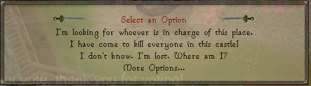
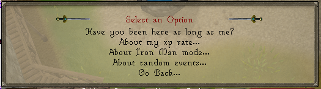
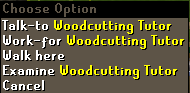
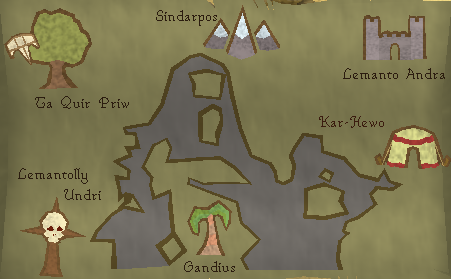
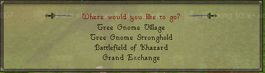

How do I get started?
In the month of February there was a huge update called "Collide of the Worlds" which added a brand new world.
You can read more up on it here : Click here .
Finally, you have made it to the right page. I really do hope that you didn't screw up your account before reading this since we have a few things
you can't do after a certain level which you will read about soon! 2009scape is the remake that no one knew they wanted but secretly needed.
If you are stumbling around and no longer want to read and want to get right to the content lets just say make sure to read the rules and have fun!
Update as of May 2021 : This guide will be changing once 2.009 is released which you can read up on here : Click Here .
Many players come in the game not knowing what to expect of how they can play the game. The nostalgic excitement can cause one to spam click buttons in the beginning causing you to miss the important starting message
Once you leave the basement where you firs start run over to Hans standing in Lumbridge Castle's courtyard. Once you talk to him it will pull up the dialogue
First click on the "More options option"
And then you will see a list of options.
 Changing xp rates
World 1 is the authentic x1 xp rate and this will never change so changing the xp is world 2 exclusive.
In 2009scape, we have a base rate xp as x5xp. This rate obviously can be changed using this option.
- x2.5xp Rate ( For those players who want the grind with some ease )
- x5xp Rate ( Stated before as being the base xp rate )
- x10xp Rate ( For those who want to have more fun than to grind out skills )
- x20xp Rate ( The newest xp rate that came with the Collide of the Worlds update.)
You can only change your xp rate once and you are able to only change it before reaching a total level of 50.
Changing Ironman Modes
There are a select few who have come from Reddit and have not played the actual game in over a decade. So, I will go into detail with each mode.
- Ironman/IronWoman Mode
- Hardcore Ironman/IronWoman Mode
- Ultimate Ironman/IronWoman
This works on both world 1 & world 2!
This account mode is the basic of the three account types. Ironman/IronWoman are unable to trade any other player so they are completely self efficient. They also can not use lootshare whatsoever which means they are still stuck collecting everything on their own.
Following the restrictions of regular Ironman/IronWoman mode the only restriction these players have is they are restricted to one life. Unlike Regular Runescape the account mode will only go back down to regular Ironman/IronWoman instead of deleting your account.
Like regular Ironman/IronWoman mode, the only other difference is ultimate Ironmen/IronWomen can not bank items. However, they can note items on bank booths and unnote the items.
In Runescape there were plenty of different ways to make money and I know it's a tad difficult hopping into the time machine and coming back to this era forgetting how in the worlds people made money. Not to worry we have you covered with some basic money making methods that may later have full guides but for now a little glimpse into what 2009scape has to offer.
- How do I get started?
- Themed Worlds
Jobs
In the year of 2009, Runescape had a job system to help newer players get used to the skill system. You came right out the tutorial Learning the ropes, just to realize that you had 25gp to your name with just a few starter tools to get you started. Most of the tutors inside of Lumbridge are trying to get you to work for them but I know right away that can be intimidating. If I were you, I would head straight to the woodcutting tutors and get your first job. While you are level one woodcutting you will most likely have to cut around 20 regular logs and give you around 5-6k.
Pyramid Plunder
This sneaky thieving mini game can end up getting you a pretty penny when first starting. As it only requires 30 thieving to get started! There are plenty of rewards to get form the mini game one being pharaoh's sceptre.
| Type | Ivory | Pottery | Stone | Gold |
| Comb | 50gp | N/A | N/A | N/A |
| Seal | N/A | N/A | 150gp | 750gp |
| Scarab | N/A | 75gp | 175gp | 1k |
| Statuette | N/A | 100gp | 200gp | 1,250gp |
Agility Pyramid
You will need a way to make sure you don't die of the desert heat and a minimum of 30 agility to get started.
The pyramid is straight-forward and when you bring Simon the pyramid top he will give you 10k each.
Make sure you bring waterskins
Stronghold of Security
Make your way over to the stronghold of security underneath the Barbarian village. Make your way through the mazes answering the player safety questions Once you have made it through the maze there is a free 10k and some colorful/fighting boots with your name on it
Gnome Gliders
One of the biggest obstacles of Runescape in 2009, was attempting to go over the white wolf mountain or you could
walk all the way to edgeville pull the wilderness lever, pull it again and end up in Ardy. Tree gnome stronghold is not
implemented in the game yet so we consider the glider free game for those who want to use it. You have several locations
you can teleport to right away.

Note: This will be removed once the quest is implemented
Spirit Trees
Just like the Gnome Gliders, the Spirit Trees are unlocked as of right now because Tree gnome village quest is not implemented yet!
Note: This will be removed once the quest is implemented
Canoes
The travel method a lot of people forget about are the canoes! They do;however,require different woodcutting levels which you can find in our woodcutting guide
Fairy Rings
I won't be going into super detail of where the fairy rings teleport you to, but I will say that in 2009scape due to Fairy tale quest not being added, the fairy rings are locked behind only the lost city quest. Check out this page for a better idea of where fairy rings go! click here
Quests
One major thing that most people on the server forget when starting the server is that quests exist in the game. While most rsps do not really have quests this is a remake of the year 2009 so the plan is to add all the quests eventually in the game. As pointed out earlier on this page is that when a quest is not implemented you can use some of the travel methods without needing to complete the quest. You can find all the quests inside the website under quest help. The quest cape works as well. Once a new quest is added you will no longer be able to wear the cape until that quest is completed.
Diaries
Recently we had an update that added the Diaries to the game! There is now certain content locked behind these achievements. With methods of fast traveling completing the Lumbridge/Draynor diaries can land you an explorer ring which teleports you to the farming patches! There are plenty of other perks of completing the diaries! So click the little green star in your quests tab to check them out!
Let us know on discord if anything should be added to the getting started guide or if any other pages should be linked from this page.

More articles in
How do I get started?
|
|